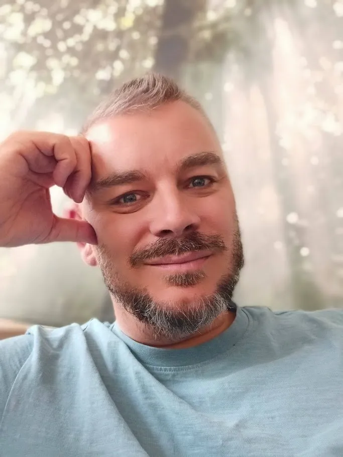

Chargé de mission Innovation Managériale · Formateur · Facilitateur en intelligence collective

J'accompagne les organisations publiques et les collectifs à révéler leur intelligence collective, renforcer la cohésion et libérer la créativité managériale.
20 ans d'expérience publique au service de la coopération, aujourd'hui mis au profit de la formation, de la facilitation et de la créativité managériale.
Ce n'est pas un hasard si mes formations résonnent : je vis chaque jour ce que j'enseigne.
Ma singularité tient à une conviction simple : une démarche collective fonctionne mieux lorsqu'elle devient visible, sensible et mémorable.
Chargé de mission Innovation Managériale au CD10 — j'accompagne chaque jour des équipes dans leurs dynamiques collectives et leurs projets.
Je conçois et anime des formations pour le CNFPT, CD10, CD88, CU Grand Reims et d'autres structures publiques et associatives.